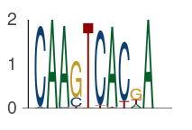
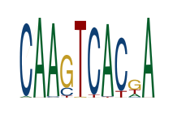
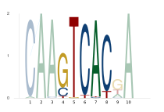
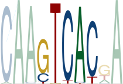
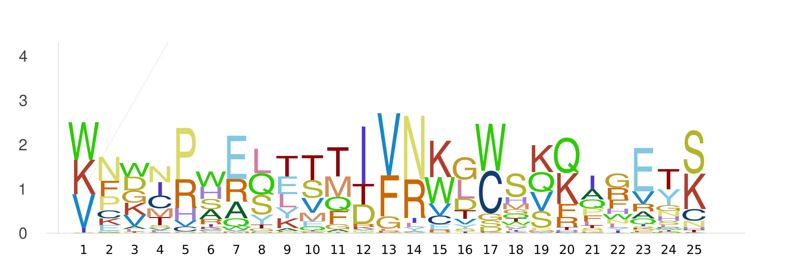
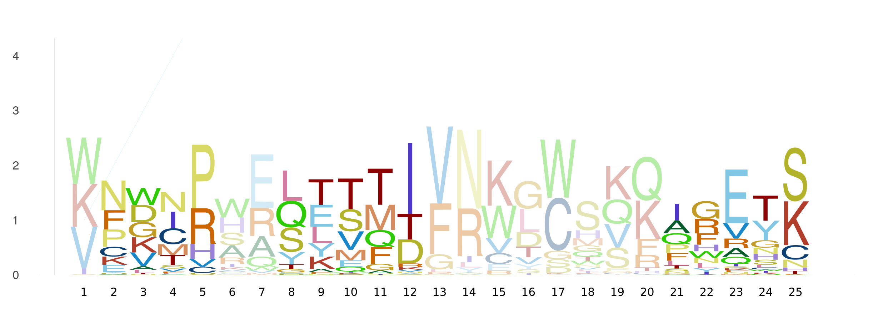
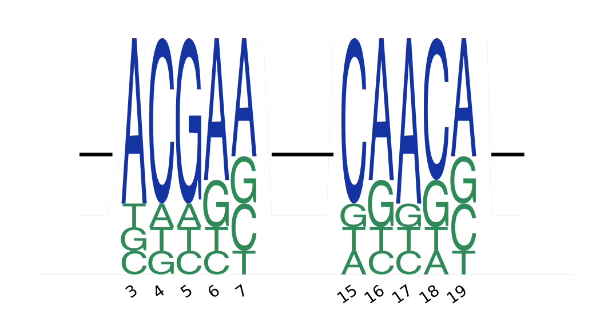
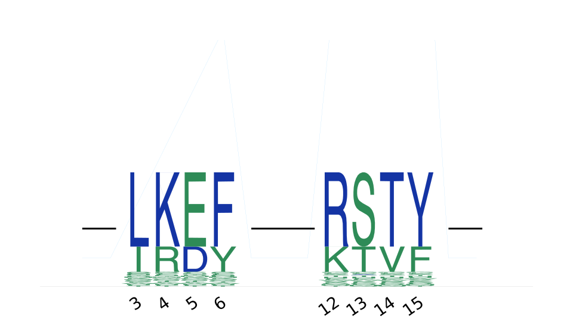

Guide
A cookbook of common tasks. Every example assumes using EntroPlots and reuses the DNA PFM below (a 4 × N matrix whose columns sum to 1):
using EntroPlots
pfm = [0.02 1.0 0.98 0.0 0.0 0.0 0.98 0.0 0.18 1.0
0.98 0.0 0.02 0.19 0.0 0.96 0.01 0.89 0.03 0.0
0.0 0.0 0.0 0.77 0.01 0.0 0.0 0.0 0.56 0.0
0.0 0.0 0.0 0.04 0.99 0.04 0.01 0.11 0.23 0.0]
logoplot(pfm)
Custom background frequencies
By default each symbol is scored against a uniform background. Pass your own background (order A, C, G, T) to score information content against it instead:
logoplot(pfm, [0.3, 0.2, 0.2, 0.3])Minimal styling (no margins, no axes)
using Plots # for `Plots.mm`
logoplot(pfm; _margin_=0Plots.mm, tight=true, yaxis=false, xaxis=false)
Highlight regions of interest
Pass a vector of position ranges to shade selected columns:
logoplot_with_highlight(pfm, [4:8])
Tight variant (no surrounding margin):
using Plots
logoplot_with_highlight(pfm, [4:8]; _margin_=0Plots.mm, tight=true)
Protein motifs (20 amino acids)
Protein PFMs are 20 × N. Use reduce_entropy! to sharpen each column toward its dominant residue — helpful for noisy matrices — then set protein=true:
matrix = rand(20, 25)
pfm_protein = matrix ./ sum(matrix, dims=1)
reduce_entropy!(pfm_protein) # sharpen toward dominant residue per column
logoplot(pfm_protein; protein=true)
logoplot_with_highlight(pfm_protein, [2:5, 8:12, 21:25]; protein=true)

RNA motifs
logoplot(pfm; rna=true) # uses A, C, G, USaving to file
The output format is inferred from the file extension (PNG, SVG, …):
save_logoplot(pfm, "logo.png") # default uniform background
save_logoplot(pfm, [0.3, 0.2, 0.2, 0.3], "logo.png") # custom background
save_logoplot(pfm_protein, "protein.png"; protein=true)
save_logoplot(pfm, "highlighted.png"; highlighted_regions=[4:8])Gapped logos with strike-through connectors
To lay several logo fragments along a single track — with the gaps between them drawn as a strike-through line — use logoplot_with_rect_gaps (or save_logo_with_rect_gaps to write straight to a file).
Unlike logoplot, this takes integer count matrices (rows = A, C, G, T; not normalized PFMs), a starting position for each fragment, and the total_length of the track. The empty regions between fragments become the strike-through connectors.
Optionally pass a one-hot reference_pfms (a BitMatrix per fragment) to color each letter by whether it matches or differs from the reference — handy for showing mutations against a wild-type sequence.
using EntroPlots
# Integer COUNT matrices (rows = A, C, G, T) — NOT normalized PFMs.
cm1 = [70 10 10 60 50
10 70 10 10 20
10 10 70 20 20
10 10 10 10 10]
cm2 = [10 60 70 10 50
70 10 10 60 20
10 20 10 20 20
10 10 10 10 10]
# One-hot reference per fragment (BitMatrix): match vs. mismatch coloring.
ref1 = BitMatrix([1 0 0 1 1
0 1 0 0 0
0 0 1 0 0
0 0 0 0 0])
ref2 = BitMatrix([0 1 1 0 1
1 0 0 1 0
0 0 0 0 0
0 0 0 0 0])
count_matrices = [cm1, cm2]
starting_indices = [3, 15] # start position of each fragment on the track
total_length = 22 # gaps between fragments -> strike-through line
save_logo_with_rect_gaps(
count_matrices, starting_indices, total_length,
"logo_rect_gaps.png";
reference_pfms = [ref1, ref2],
dpi = 100,
xrotation = 35,
uniform_color = true,
ref_match_color = "#1434A4", # blue: matches reference
ref_mismatch_color = "#2E8B57", # green: differs from reference
)
Set filter_by_reference=true to first drop columns that exactly match the reference (via apply_count_filter), keeping only the positions that vary. To draw the plot without saving, call logoplot_with_rect_gaps with the same arguments (minus the file path).
Amino-acid (protein) variant
The same works for protein motifs — pass protein=true and supply 20-row count matrices and references (rows in the order A C D E F G H I K L M N P Q R S T V W Y):
using EntroPlots
# 20 amino acids, in the row order EntroPlots expects.
const AA = ["A","C","D","E","F","G","H","I","K","L",
"M","N","P","Q","R","S","T","V","W","Y"]
row(c) = findfirst(==(c), AA)
# 20 x ncols COUNT matrix: small background, a tall dominant residue per column,
# plus a shorter secondary residue for a realistic stack.
function counts(dominant, secondary; base=1, hi=90, mid=30)
M = fill(base, 20, length(dominant))
for j in eachindex(dominant)
M[row(dominant[j]), j] += hi
M[row(secondary[j]), j] += mid
end
return M
end
# One-hot reference (BitMatrix): the wild-type residue per column.
onehot(seq) = BitMatrix([AA[i] == seq[j] for i in eachindex(AA), j in eachindex(seq)])
# Fragment 1: dominant motif L K E F ; reference (wild-type) L K D F
cm1 = counts(["L","K","E","F"], ["I","R","D","Y"])
ref1 = onehot(["L","K","D","F"]) # column 3 differs (E vs D) -> mismatch color
# Fragment 2: dominant motif R S T Y ; reference R A T Y
cm2 = counts(["R","S","T","Y"], ["K","T","V","F"])
ref2 = onehot(["R","A","T","Y"]) # column 2 differs (S vs A) -> mismatch color
save_logo_with_rect_gaps(
[cm1, cm2], [3, 12], 17, # starts at 3 and 12, total track length 17
"logo_rect_gaps_protein.png";
protein = true,
reference_pfms = [ref1, ref2],
dpi = 100,
xrotation = 35,
uniform_color = true,
ref_match_color = "#1434A4", # blue: matches reference
ref_mismatch_color = "#2E8B57", # green: differs from reference
)
Here LKEF and RSTY are the dominant motifs; the reference-mismatch columns (E in fragment 1, S in fragment 2) are drawn in green, everything matching the wild-type in blue.
Common keyword arguments
Most plotting functions accept the following keywords:
| Keyword | Purpose |
|---|---|
protein | Treat the PFM as a 20-row amino-acid matrix. |
rna | Use A, C, G, U glyphs instead of A, C, G, T. |
tight | Use tight plot limits (drops padding around the logo). |
_margin_ | Outer plot margin (e.g. 0Plots.mm). |
xaxis, yaxis | Toggle axis display. |
dpi | Output resolution. |
alpha, beta | Glyph transparency and width scaling. |
uniform_color | Use a single color for all glyphs. |
scale_by_frequency | Scale letters by frequency only (stack to full height) instead of by information content. |
pos, xrotation | Position labelling and x-tick rotation. |
See the API Reference for the full signatures and per-function options.